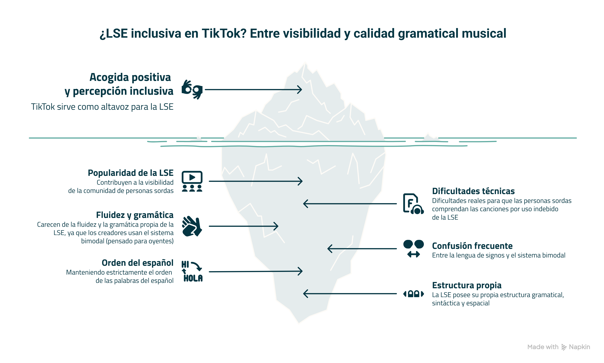
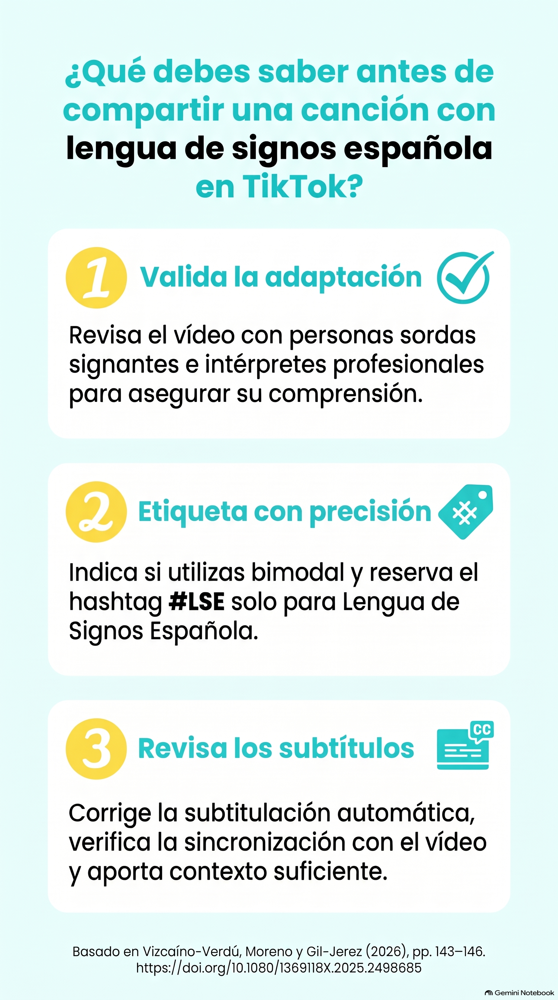

Análisis cuantitativo
¿Qué decía el público sobre los vídeos con #LSE?
Entre los 1.850 comentarios analizados, el 63 % obtuvo una puntuación positiva, el 34 % neutra y el 3 % negativa.
TikTok · Música · Lengua de signos española
Qué revela un estudio sobre la accesibilidad de los retos musicales etiquetados con #LSE.
Polaridad media de 1.850 comentarios analizados.
En TikTok, muchos comentarios celebran lo bonito e inclusivo que es ver una canción en lengua de signos española. Sin embargo, intérpretes profesionales advierten que muchos de estos vídeos utilizan el sistema bimodal, que no sigue ni respeta la estructura lingüística de dicha lengua. El resultado es una paradoja, ya que estos vídeos musicales son difíciles de entender para personas sordas a las que aparentemente podrían ir dirigidos. Es decir, nos encontramos ante una tendencia que prioriza los "likes" frente a la inclusión real.
El estudio

Un episodio sobre los retos musicales de TikTok, la lengua de signos española y la accesibilidad.
1 min 23 s · Generado con NotebookLM · Descargar audio
Transcripción automática del audio, con ajustes de puntuación.
Aquí tenéis la píldora informativa sobre los vídeos musicales con signos en TikTok. Seguro que habéis visto en la plataforma esa supermoda de interpretar temazos bajo el hashtag LSE. Pero ojo, nos hemos parado a pensar si esta tendencia es realmente tan inclusiva como nos pintan.
Bueno, pues lo primero que destaca esta investigación es un contraste brutal. A ver, por un lado, el público oyente está encantadísimo y llena los comentarios aplaudiendo a tope la inclusión. Pero ¿qué pasa cuando le preguntamos a los expertos? Porque los profesionales advierten de que la comunidad sorda apenas entiende lo que está viendo en pantalla.
Segundo, el motivo de esta incomprensión es más simple de lo que parece. Resulta que la mayoría de creadores no están usando la verdadera lengua de signos española, la cual tiene una gramática visual propia, ¿sabéis? Lo que hacen es tirar del sistema bimodal, o sea, cogen la estructura hablada del castellano y simplemente le pegan signos sueltos, para que nos entendamos. Es como intentar hablar inglés usando exactamente las reglas gramaticales del español. Las palabras están ahí, ¿vale? Pero el mensaje pierde absolutamente todo el sentido.
Y por último, nos damos cuenta de que todo esto genera una pura ilusión de accesibilidad. En el fondo, seamos sinceras. El objetivo de muchos creadores es conseguir likes y hacerse virales rápido, no lograr una integración real. Al ignorar por completo las normas de la comunidad sorda acaban distorsionando el idioma y apropiándose de él. Que algo sea visible no significa que sea accesible.
Análisis cuantitativo
Entre los 1.850 comentarios analizados, el 63 % obtuvo una puntuación positiva, el 34 % neutra y el 3 % negativa.
Análisis cualitativo
Cuatro temas de las entrevistas con profesionales de la interpretación de lengua de signos española.
Interpretar y compartir una canción con LSE en TikTok requiere el apoyo de profesionales de la interpretación, o bien, la involucración de personas sordas. No usar la LSE erróneamente para ganar popularidad en la plataforma.

Vizcaíno-Verdú, A., Moreno, M. y Gil-Jerez, M. (2026). The sign-sync trend on TikTok: navigating engagement and digital accessibility in music challenges. Information, Communication & Society, 29(1), 131–150.
DOI 10.1080/1369118X.2025.2498685
Esta página ha sido diseñada con ChatGPT para la definición del código de la aplicación web. Para el diseño del pódcast y una de las infografías se empleó NotebookLM. Asimismo, la infografía del estudio se elaboró con Napkin. Los gráficos interactivos fueron elaborados con Flourish.